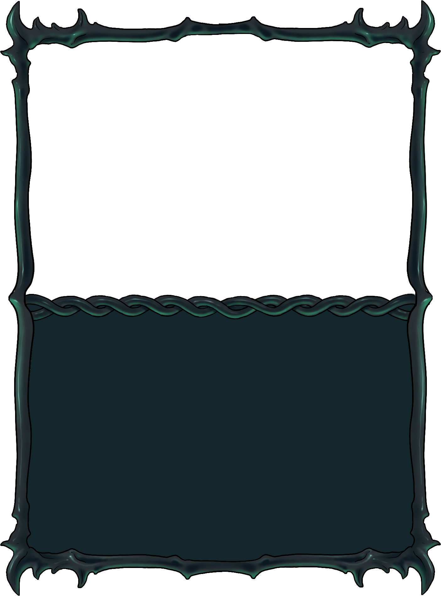
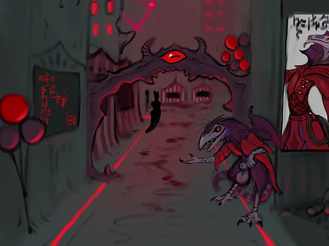
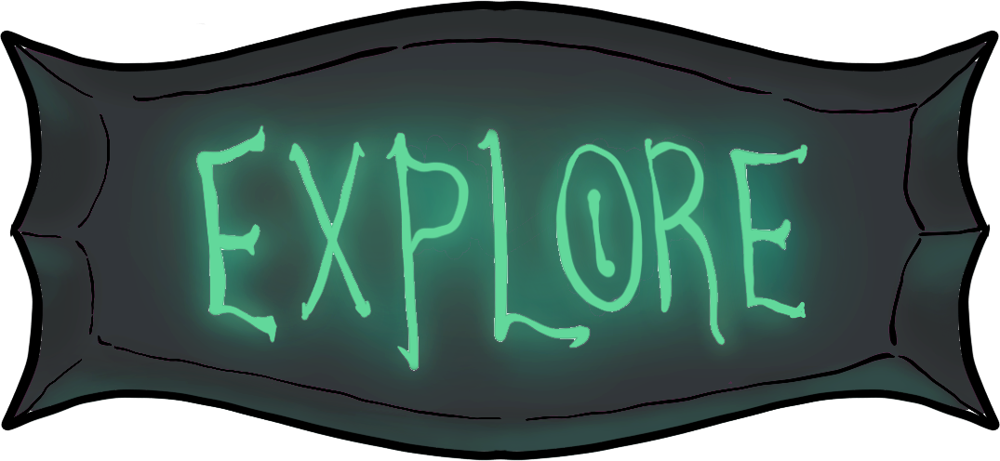
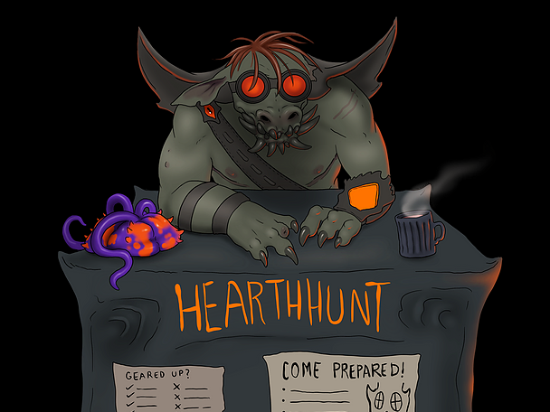
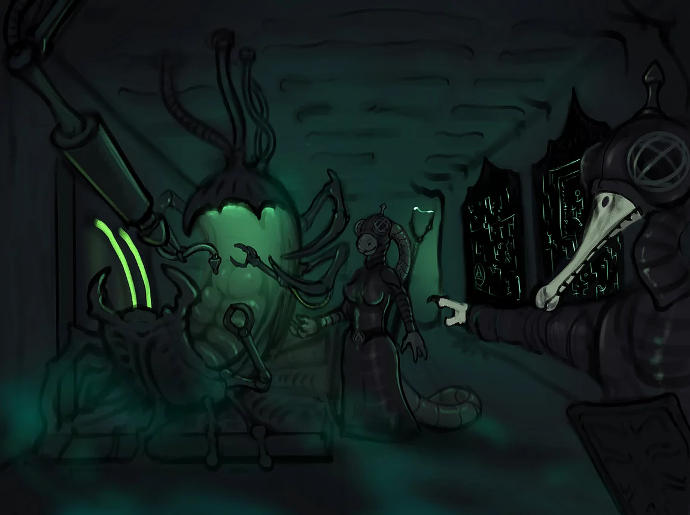

Cirque du Sadique
Dare you brave Mordecai Balkor's famously grisly event?

Dare you brave Mordecai Balkor's famously grisly event?


HearthHunt
In the depths of the Neverlight phase, Citizens begin to seek treasures and prizes in the HearthHunt...
In the depths of the Neverlight phase, Citizens begin to seek treasures and prizes in the HearthHunt...

Induction
Chosen Ones who appear beyond the City gates first find themselves being uniquely 'welcomed' here...
Chosen Ones who appear beyond the City gates first find themselves being uniquely 'welcomed' here...